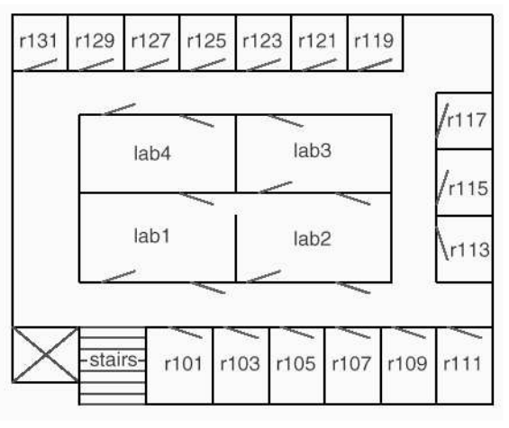
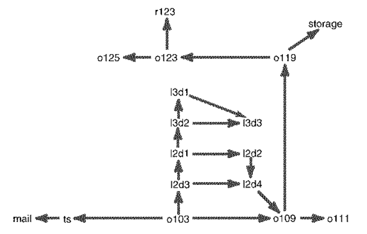

Tema 12: Búsqueda general en espacio de estados
Índice
En este tema se estudiará un procedimiento general de búsqueda que incluye a los procedimientos estudiados en el tema 8. Como caso de estudio se considerará el robot repartidor introducido en el tema 11.
1. El robot repartidor
1.1. Descripción del problema
- El plano del dominio del robot repartidor es (Poole–98 p. 14)
 - El grafo del robot repartidor es (Poole–98 p. 14)
 Lenguaje para indicar la posición del robot:
f103en frente la habitación 103 feen frente la escalera correoen el correo l2p3en la puerta 3 del laboratorio 2 almacénen el almacén h123en la habitación 123 - El problema consiste en buscar un camino en el grafo desde
f103hastah123.
1.2. Estado inicial
estado_inicial(?E)se verifica siEes el estado inicial.estado_inicial(f103).
1.3. Estados finales
estado_final(?E)se verifica siEes un estado final.estado_final(h123).
1.4. Sucesores
sucesor(+E1,?E2)se verifica siE2es un sucesor del estadoE1.sucesor(f103,fe). sucesor(f103,l2p3). sucesor(f103,f109). sucesor(fe,correo). sucesor(f109,f111). sucesor(f109,f119). sucesor(f119,almacén). sucesor(f119,f123). sucesor(f123,h123). sucesor(f123,f125). sucesor(l2p1,l3p2). sucesor(l2p1,l2p2). sucesor(l2p2,l2p4). sucesor(l2p3,l2p1). sucesor(l2p3,l2p4). sucesor(l2p4,f109). sucesor(l3p2,l3p3). sucesor(l3p2,l3p1). sucesor(l3p1,l3p3).
1.5. Coste
coste(+E1,+E2,?C)se verifica siCes el coste de ir del estadoE1alE2.coste(E1,E2,C) :- posicion(E1,X1,Y1), posicion(E2,X2,Y2), C is abs(X1-X2)+abs(Y1-Y2).
posicion(E,X,Y)se verifica si la posición del estadoEes(X,Y).posicion(correo,17,43). posicion(fe,23,43). posicion(f103,31,43). posicion(f109,43,43). posicion(f111,47,43). posicion(f119,42,58). posicion(f123,33,58). posicion(f125,29,58). posicion(h123,33,62). posicion(l2p1,33,49). posicion(l2p2,39,49). posicion(l2p3,32,46). posicion(l2p4,39,46). posicion(l3p1,34,55). posicion(l3p2,33,52). posicion(l3p3,39,52). posicion(almacén,45,62).
1.6. Heurística
heuristica(+E,?H)se verifica siHes la heurística del estadoE.heuristica(E,H) :- posicion(E,X,Y), estado_final(E1), posicion(E1,X1,Y1), H is abs(X-X1)+abs(Y-Y1).
1.7. Código
- El código de esta sección se encuentra en robot_reartidor.pl.
2. Procedimiento general de búsqueda
2.1. Procedimiento general de búsqueda
- Relaciones dependientes del problema:
estado_inicial(E)se verifica siEes el estado inicial.estado_final(E)se verifica siEes un estado final.sucesor(E1,E2)se verifica siE2es un estado sucesor deE1.coste(E1,E2,C)se verifica siCes el coste de ir del estadoE1alE2.heuristica(E,H)que se verifica siHes la heurística del estadoE.
- Datos:
- Un nodo es una lista de estados
[E(n),...,E(1)]de forma queE(1)es el estado inicial yE(i+1)es un sucesor deE(i) - Abiertos es una lista de nodos (los nodos pendientes de analizar)}
- Un nodo es una lista de estados
busqueda(+M,?S)se verifica siSes una solución del problema mediante búsqueda según el métodoM
El procedimiento es- 1. Sea
Eel estado inicial. - 2. La solución
Ses la obtenida por búsqueda según el métodoMcon[[E]]como la lista de abiertos.
Su definición es
busqueda(M,S) :- estado_inicial(E), % 1 busqueda(M,[[E]],S). % 2
- 1. Sea
busqueda(+M,+Abiertos,?S)se verifica siSes una solución encontrada por búsqueda según el métodoMa partir de las listas deAbiertos.
El procedimiento es1. Si
- 1.1. el primer elemento de Abiertos es
[E|C]y - 1.2.
Ees un estado final,
entonces
- 1.3
Ses la inversa de[E|C].
- 1.1. el primer elemento de Abiertos es
2. Si
- 2.1.
Nes un nodo deAbiertos(seleccionado según el métodoM) yRson los restantes nodos deAbiertos, - 2.2.
Sucesoreses la lista de los sucesores del nodoN, - 2.3. los nuevos abiertos,
NAbiertos, es la lista obtenida expandiendo (según el métodoM)Rcon losSucesores
entonces
- 2.4.
Ses la solución obtenida por búsqueda (según el métodoM) con los nuevos abiertos.
- 2.1.
Su definición es
busqueda(_M,Abiertos,S) :- Abiertos = [[E|C]|_], % 1.1 estado_final(E), % 1.2 reverse([E|C],S). % 1.3 busqueda(M,Abiertos,S) :- selecciona(M,Abiertos,N,R), % 2.1 sucesores(N,Sucesores), % 2.2 expande(M,R,Sucesores,NAbiertos), % 2.3 busqueda(M,NAbiertos,S). % 2.4
selecciona(+M,+LN1,?N,?LN2)se verifica siNes un nodo de la listaLN1yLN2es la lista de los restantes nodos. Se definirá en cada método.:- discontiguous selecciona/4.sucesores(+N,?L)se verifica siLes la lista de los sucesores del nodoNsucesores([E|C],L) :- findall([E1,E|C],sucesor(E,E1),L).
expande(+M,+L1,+Sucesores,?L2)se verifica siL2es la lista expandiendo (según el métodoM) la lista de nodosL1con la lista de nodosSucesores. Se definirá en cada método.:- discontiguous expande/4.
2.2. Búsqueda en anchura
En la búsqueda en anchura se selecciona el primer nodo de
Abiertos.selecciona(anchura,[N|R],N,R).
En la búsqueda en anchura los sucesores se añaden al final de
Abiertos.expande(anchura,L1,Sucesores,L2) :- append(L1,Sucesores,L2).
Ejemplo:
?- [busqueda, robot_repartidor]. true. ?- busqueda(anchura,S). S = [f103,f109,f119,f123,h123] ; S = [f103,l2p3,l2p4,f109,f119,f123,h123] ?- trace(estado_final,+call). true. ?- busqueda(anchura,S). T Call: estado_final(f103) T Call: estado_final(fe) T Call: estado_final(l2p3) T Call: estado_final(f109) T Call: estado_final(correo) T Call: estado_final(l2p1) T Call: estado_final(l2p4) T Call: estado_final(f111) T Call: estado_final(f119) T Call: estado_final(l3p2) T Call: estado_final(l2p2) T Call: estado_final(f109) T Call: estado_final(almacén) T Call: estado_final(f123) T Call: estado_final(l3p3) T Call: estado_final(l3p1) T Call: estado_final(l2p4) T Call: estado_final(f111) T Call: estado_final(f119) T Call: estado_final(h123) S = [f103,f109,f119,f123,h123] ?- trace(estado_final,-all). true.
2.3. Búsqueda en profundidad
En la búsqueda en profundidad se selecciona el primer nodo de
Abiertos.selecciona(profundidad,[N|R],N,R).
En la búsqueda en profundidad los sucesores se añaden al principio de
Abiertos.expande(profundidad,L1,Sucesores,L2) :- append(Sucesores,L1,L2).
Ejemplo:
?- busqueda(profundidad,S). S = [f103,l2p3,l2p1,l2p2,l2p4,f109,f119,f123,h123] ?- trace(estado_final,+call). true. ?- busqueda(profundidad,S). T Call: estado_final(f103) T Call: estado_final(fe) T Call: estado_final(correo) T Call: estado_final(l2p3) T Call: estado_final(l2p1) T Call: estado_final(l3p2) T Call: estado_final(l3p3) T Call: estado_final(l3p1) T Call: estado_final(l3p3) T Call: estado_final(l2p2) T Call: estado_final(l2p4) T Call: estado_final(f109) T Call: estado_final(f111) T Call: estado_final(f119) T Call: estado_final(almacén) T Call: estado_final(f123) T Call: estado_final(h123) S = [f103,l2p3,l2p1,l2p2,l2p4,f109,f119,f123,h123] ?- trace(estado_final,-all). true.
2.4. Búsqueda optimal
2.4.1. Valor de los nodos
valor(+M,+N,?V)se verifica si el valor (según el métodoM) del nodoNesV. Se define en cada método. En la búsqueda optimal es coste del camino.:- discontiguous valor/3. valor(optimal,N,V) :- coste_camino(N,V).
coste_camino(+N,?V)se verifica siVes el coste del camino representado por el nodoN.coste_camino([_E],0). coste_camino([E2,E1|R],V) :- coste(E2,E1,V1), coste_camino([E1|R],V2), V is V1+V2.
2.4.2. Selección
En la búsqueda optimal se selecciona el nodo de
Abiertosde menor valor.selecciona(optimal,LN1,N,LN2) :- selecciona_con_valor(optimal,LN1,N,LN2).
selecciona_con_valor(+M,+LN1,?N,?LN2)se verifica siNes el mejor nodo (según el métodoM) de la listaLN1yLN2es la lista de los restantes nodos.selecciona_con_valor(M,LN1,N,LN2) :- member(N,LN1), valor(M,N,V), not(member(N1,LN1), valor(M,N1,V1), V1 < V), select(LN1,N,LN2).
2.4.3. Expansión
En la búsqueda optimal los sucesores se añaden al final de
Abiertos.expande(optimal,L1,Sucesores,L2) :- append(Sucesores,L1,L2).
2.5. Búsqueda por primero el mejor
En la búsqueda por primero el mejor, el valor de un nodo es la heurística del primero de sus estados.
valor(primero_el_mejor,[E|_R],V) :- heuristica(E,V).
2.5.1. Selección
En la búsqueda por primero el mejor se selecciona el nodo de
Abiertosde menor valor (es decir, de menor heurística).selecciona(primero_el_mejor,LN1,N,LN2) :- selecciona_con_valor(primero_el_mejor,LN1,N,LN2).
2.5.2. Expansión
En la búsqueda por primero el mejor los sucesores se añaden al principio de
Abiertos.expande(primero_el_mejor,L1,Sucesores,L2) :- append(Sucesores,L1,L2).
2.6. Búsqueda por A*
2.6.1. Valor
En la búsqueda A* el coste de un nodo es la suma del coste de su camino más la heurística.
valor(a_estrella,[E|R],V) :- coste_camino([E|R],V1), heuristica(E,V2), V is V1+V2.
2.6.2. Selección
En la búsqueda A* se selecciona el nodo de
Abiertosde menor valor (es decir, de menor coste del camino más heurística).selecciona(a_estrella,LN1,N,LN2) :- selecciona_con_valor(a_estrella,LN1,N,LN2).
2.6.3. Expansión
En la búsqueda A* el mejor los sucesores se añaden al principio de
Abiertos.expande(a_estrella,L1,Sucesores,L2) :- append(Sucesores,L1,L2).
2.7. Código
- El código del procedimiento general de búsqueda se encuentra en busqueda.pl.
3. Procedimiento general de búsqueda sin reevaluaciones
3.1. Procedimiento general de búsqueda con valores
- Datos:
- Un nodo es un término
V-[E(n),...,E(1)]de forma queE(1)es el estado inicial,E(i+1)es un sucesor deE(i)yVes el valor de[E(n),...,E(1)]según el procedimiento de búsqueda. - Abiertos es una lista de nodos (los nodos pendientes de analizar).}
- Un nodo es un término
busqueda(+M,?S)se verifica siSes una solución del problema mediante búsqueda según el métodoM.
Procedimiento:- 1. Sea
Eel estado inicial y - 2. sea
Vel valor de la extensión del nodo0-[]con el estadoE - 3. La solución
Ses la obtenida por búsqueda en anchura con[V-[E]]como la lista de abiertos.
Su definición es
busqueda(M,S) :- estado_inicial(E), % 1 valor(M,0-[],E,V), % 2 busqueda(M,[V-[E]],S). % 3
- 1. Sea
valor(+M,+N,+E,?V)se verifica si el valor (según el métodoM) de la extensión del nodoNcon el estadoEesV. Se define en cada método.:- discontiguous valor/3.busqueda(+M,+Abiertos,?S)se verifica siSes una solución encontrada por búsqueda según el métodoMa partir de las listas deAbiertos.busqueda(_M,Abiertos,S) :- Abiertos = [_-[E|C]|_], % 1.1 estado_final(E), % 1.2 reverse([E|C],S). % 1.3 busqueda(M,Abiertos,S) :- selecciona(M,Abiertos,N,R), % 2.1 sucesores(M,N,Sucesores), % 2.2 expande(M,R,Sucesores,NAbiertos), % 2.3 busqueda(M,NAbiertos,S). % 2.4
selecciona(+M,+LN1,?N,?LN2)se verifica siNes el primer nodo de la listaLN1yLN2es la lista de los restantes nodos.selecciona(_M,[N|R],N,R).
sucesores(+N,?L)se verifica siLes la lista de los sucesores del nodoN.sucesores(M,V-[E|C],L) :- findall(V1-[E1,E|C], (sucesor(E,E1),valor(M,V-[E|C],E1,V1)), L).
expande(+M,+L1,+Sucesores,?L2)se verifica siL2es la lista obtenida expandiendo (según el métodoM) la lista de nodosL1con la lista de nodos ~Sucesores, ordenada por sus valores.expande(_M,L1,Sucesores,L2) :- append(Sucesores,L1,L3), sort(L3,L2).
3.2. Búsqueda optimal
El valor en la búsqueda optimal es el coste del camino.
valor(optimal,0-[],_E,0). valor(optimal,V-[E|_C],E1,V1) :- coste(E,E1,V2), V1 is V+V2.
3.3. Búsqueda por primero el mejor
El valor en la búsqueda por primero el mejor es la heurística.
valor(primero_el_mejor,_N,E,V) :- heuristica(E,V).
3.4. Búsqueda A*
El valor en la búsqueda A* es la suma del coste del camino y la heurística.
valor(a_estrella,0-[],E,H+0) :- heuristica(E,H). valor(a_estrella,_F+C-[E|_R],E1,F1+C1) :- coste(E,E1,C2), C1 is C+C2, heuristica(E1,H), F1 is C1+H.
3.5. Ejemplos
Ejemplos de búsquedas con valores
?- [busqueda_con_valores, robot_repartidor]. true. ?- busqueda(optimal,S). S = [f103,f109,f119,f123,h123] ?- busqueda(primero_el_mejor,S). S = [f103,f109,f119,f123,h123] ?- busqueda(a_estrella,S). S = [f103,f109,f119,f123,h123]
3.6. Código
- El código del procedimiento general de búsqueda con valores se encuentra en busqueda_con_valores.pl.
4. Refinamientos de estrategias de búsqueda
- El procedimiento general de búsqueda se puede refinar:
- Eliminando ciclos.
- Eliminando caminos múltiples.
- El procedimiento general de búsqueda se puede ampliar para incluir:
- Búsqueda por profundidad acotada.
- Búsqueda en profundidad iterativa.
- Búsqueda en haz.
- Búsqueda en escalada.
5. Bibliografía
- P. Flach.
Simply logical (Intelligent reasoning by example).
(John Wiley, 1994)
- Cap. 5: Seaching graphs.
- Cap. 6: Informed search.
- N.J. Nilsson y N.J. Nilsson
Artificial intelligence: A new synthesis.
- Cap. 7: Agents that plan.
- Cap. 8: Uniformed search.
- Cap. 9: Heuristic search.
- D. Poole, A. Mackworth y R. Goebel
Computational intelligence (A logical approach)}
(Oxford University Press, 1998)
- Cap. 4: Searching.
- D. Poole y A. Mackworth.
Artificial intelligence: Foundations of computational agents.
(Cambridge University Press, 2010).
- Cap. 3: States and searching.
- S. Russell y P. Norvig.
Artificial intelligence: A modern approach.
(Pearson, 2010).
- Cap. 3: Solving problems by searching.
- Y. Shoham
Artificial intelligence techniques in Prolog
(Morgan Kaufmann, 1994)
- Cap. 2: Search.